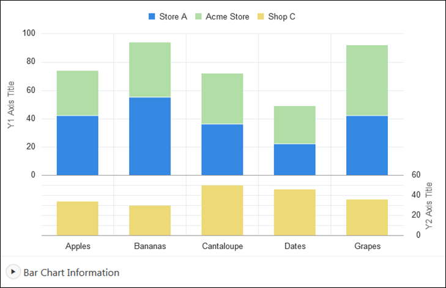

12.5 Creating Charts
You can add a chart by running a built-in wizard or creating it manually in Page Designer.
- About Supported Charts
App Builder supports two types of charts: Charts (based on the Oracle JavaScript Extension Toolkit (Oracle JET) Data Visualizations) and AnyChart Charts. - Sample Charts
Developers can view chart examples by installing the Sample Charts sample application. - Adding a Chart on a New Page Using a Local Database
Add a chart on a new page using a local database: - Adding a Chart on a New Page Using External Data Sources
Run the Create Page Wizard to add a new page with a chart using an external data source. - Adding a Chart in Page Designer
Add a chart by creating it manually in Page Designer. - Managing Charts
You can alter how a chart displays by editing chart attributes in Page Designer. - Using Custom JavaScript with Charts
Control the look and feel of a chart by adding custom JavaScript.
See Also:
Parent topic: Managing Database Application Components
12.5.1 About Supported Charts
App Builder supports two types of charts: Charts (based on the Oracle JavaScript Extension Toolkit (Oracle JET) Data Visualizations) and AnyChart Charts.
App Builder supports the following charts:
-
Chart - Chart support in Oracle Application Express is based on the Oracle JET Data Visualizations. Oracle JET empowers developers by providing a modular open source toolkit based on modern JavaScript, CSS3, and HTML5 design and development principles. The Oracle JET data visualization components include customizable charts, gauges, and other components that you can use to present flat or hierarchical data in a graphical display for data analysis. Each Oracle JET visualization supports animation, accessibility, responsive layout, internationalization, test automation, and a range of inter activity features. The charts provide dozens of different ways to visualize a data set, including bar, line, area, range, combination, scatter, bubble, polar, radar, pie, donut, funnel, and stock charts..
See Also:
"Working with Data Visualizations" in JavaScript Extension Toolkit (JET) Developing Applications with Oracle JET.
-
AnyChart Chart - AnyChart chart support is based on a third party charting solution provided by AnyChart. This is a flexible Flash and JavaScript (HTML5) based solution that enables developers to create animated and compact interactive charts. AnyChart charts have been categorized as a legacy component and may be deprecated in the future release.
See Also:
"Managing Legacy Charts" and "Upgrading an Application to Include New Components"
Parent topic: Creating Charts
12.5.2 Sample Charts
Developers can view chart examples by installing the Sample Charts sample application.
The following is a sample chart from Sample Charts sample application.
Description of the illustration sample_charts.png
The chart includes the following attributes:
-
Extra Y axis - Displays the title Y2 Axis Title, and associated with Shop C series of data.
-
Split Dual Y Axis - Displays two series of data, Store A and Acme Store, stacked and associated with the Y axis, and the third series of data, Shop C, associated with an extra Y axis and rendered as a separate chart below the other two series of data.
Expand the Bar Chart Information region at the bottom of the page to view information on the chart.
See Also:
"安装生产力和示例应用" for more information on installing the Sample Charts application
Parent topic: Creating Charts
12.5.3 Adding a Chart on a New Page Using a Local Database
Add a chart on a new page using a local database:
To add a chart on a new page:
Parent topic: Creating Charts
12.5.4 Adding a Chart on a New Page Using External Data Sources
Run the Create Page Wizard to add a new page with a chart using an external data source.
The component(s) described in this topic include built-in support for REST Enabled SQL and Web Sources which enables read and write access to remote data sources. In order to build a component on a remote data source, you must first create the application and configure the external data source.
Tip:
To learn more about external data sources, see "Managing REST Enabled SQL References" and "Managing Web Source Modules."To add a chart on a new page using an external data source:
Parent topic: Creating Charts
12.5.5 Adding a Chart in Page Designer
Add a chart by creating it manually in Page Designer.
To add a chart to an existing page in Page Designer:
Parent topic: Creating Charts
12.5.6 Managing Charts
You can alter how a chart displays by editing chart attributes in Page Designer.
See Also:
Parent topic: Creating Charts
12.5.6.2 Switching Chart Type
Once you create a chart, you can switch its chart type by editing chart attributes.
To switch a chart type:
Parent topic: Managing Charts
12.5.6.3 Enabling Automatic Refresh
Charts can monitor information by enabling the Automatic Refresh attribute on the Chart attributes page, or using a dynamic action with the Refresh action.
Parent topic: Managing Charts
12.5.6.3.1 Enabling the Automatic Refresh Attribute
Enabling the Automatic Refresh attribute updates the chart to reflect changes in the underlying data within a specified time interval.
To enable automatic refresh updates:
Parent topic: Enabling Automatic Refresh
12.5.6.3.2 Creating a Refresh Dynamic Action
To create a Refresh dynamic action:
Parent topic: Enabling Automatic Refresh
12.5.7 Using Custom JavaScript with Charts
Control the look and feel of a chart by adding custom JavaScript.
To use custom JavaScript:
Tip:
The Sample Charts application contains a number of examples of using custom JavaScript with chart. See "安装生产力和示例应用" for more information on installing sample applications.
See Also:
Parent topic: Creating Charts